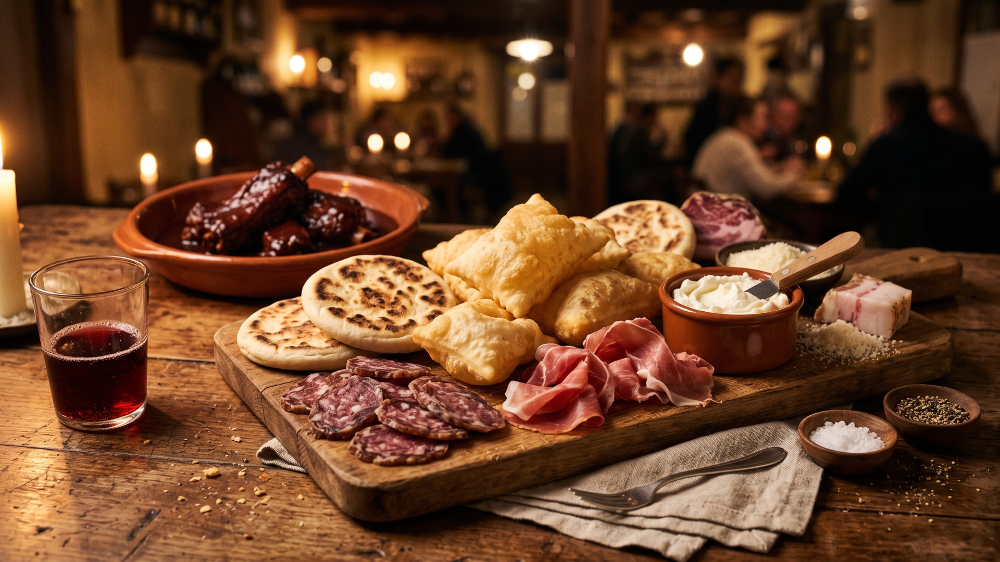
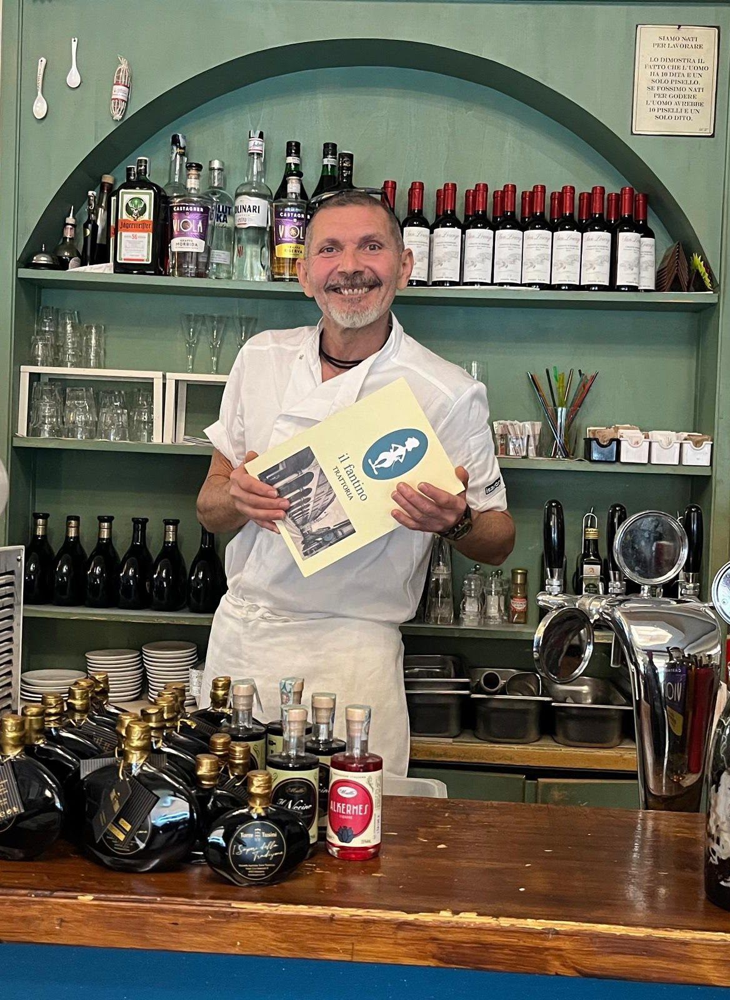
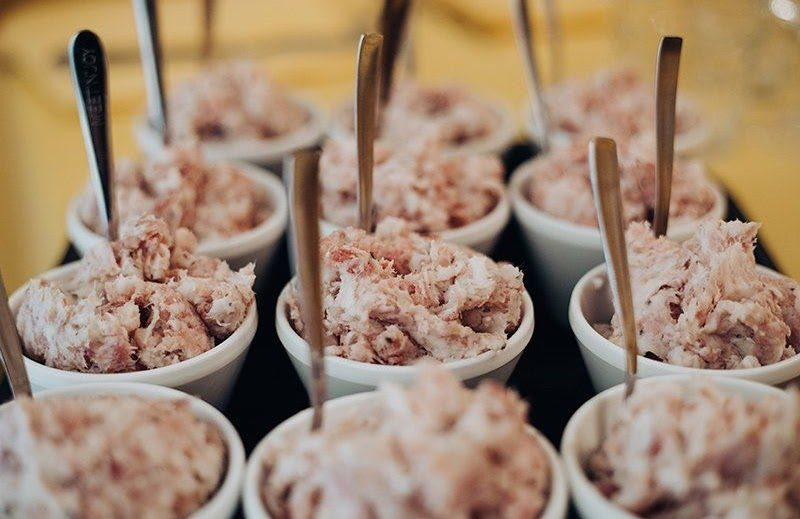

Trattoria il Fantino
Dove i cavallerizzi dell'accademia legavano i cavalli, da oltre un secolo si serve la vera cucina modenese.
Paste tirate a mano, il banco di salumi e formaggi, i vini del territorio. Niente fronzoli: solo Modena nel piatto.
Dal primo '900
Sotto la Ghirlandina
4,4 ★
Oltre 3.300 recensioni
Gambero Rosso
Touring Club
Nelle guide

La nostra storia
Un secolo sotto la torre.
Dove un tempo i cavallerizzi dell'accademia militare tenevano il loro circolo, il Fantino apre le porte dai primi anni del Novecento. Da allora, sotto la Ghirlandina, si serve la Modena di sempre.
Dal 2007 la cucina è nelle mani degli chef Marco Bianco e Mauro Calzolari. Paste fresche tirate a mano, salumi e formaggi dal grande banco, vini del territorio. La vera cucina di casa, servita come una volta.

Il cuore della trattoria
Il banco, come una bottega di una volta.
Salumi e formaggi a vista, le tigelle calde, lo gnocco fritto che arriva in tavola. Ti siedi tra i tavoli di legno e ordini ciò che vedi. Niente di costruito: la trattoria modenese, vera.
Galleria
Dalla cucina, alla tavola.
Vieni a trovarci
In centro, a due passi dalla Ghirlandina.
- Indirizzo
- Via Donzi 7, 41121 Modena
- Orari
- Mar–Ven: 12:30–14:00 · 19:15–22:30
Sab: 12:30–14:30 · 19:15–22:30
Dom: 12:30–14:30 · Lun: chiuso - Prenotazioni
- 059 223646